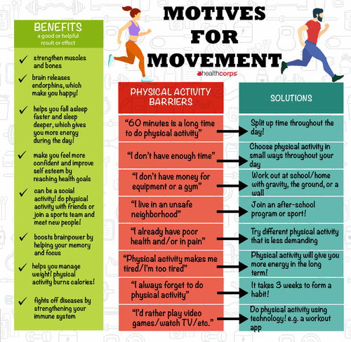

Physical Activity Deficiency
According to the WHO, US Department of Health, and other credible sources, it is recommended for adults aged 18-64 years to engage in at least 150 minutes of moderate physical activity or 75 minutes of vigorous physical activity per week,
and children aged 5-17 years to do at least 60 minutes of physical activity per day (as well as incorporating vigorous activities that strengthen muscle and bone at least 3 days a week).
However, 1 in 4 adults globally do not meet these recommended levels, with higher levels of insufficient activity in areas like the United States (where less than a quarter of adults get enough exercise).
This problem is far worse in children and adolescents, where 80% of the world's adolescent population is insufficiently physically active. Furthermore, the global pandemic has exacerbated this deficiency: the number of Canadian youth meeting
recommended physical activity levels decreased by 27% compared to pre-pandemic levels.
Technology plays a clear role in these results: according to the American Heart Association,
smartphones, tablets, TVs, and other screen-based devices are making people, especially youth, more sedentary. Children are now spending more than 60% of their waking day sedentary, instead of being active.
The Importance of Exercise
The benefits of physical activity have been extensively researched and are significant. Examples of such benefits are listed below:
- Physical activity reduces the risk of heart disease, stroke, hypertension, diabetes, cancer, all-cause mortality, and depression
- Physical activity improves muscular and cardiorespiratory fitness, bone and functional health, sleep, and mental health
- Exercise reduces symptoms of depression and anxiety
- Exercise enhances learning, thinking, and judgment skills
- Physical activity promotes healthy growth and development in young people
- People who are insufficiently active have a 20%-30% increased risk of death compared to people who are active
Overcoming Barriers
Despite the recognized importance of exercise, deficiencies still exist, due to barriers like the lack of time, lack of energy/motivation, high cost, and weather conditions. However, it must be recognized that physical activity does not only include vigorous/active exercise, but also mundane movements like movement during leisure time, movement for transportation, or as part of a person's work. With this awareness, physical activity becomes very accessible and achievable. Strategies to overcome barriers include:
- Identifying available time slots and selecting activities that can be done in the time available
- Incorporating physical activity to your daily routine, e.g. taking the stairs, exercising while watching TV, parking further away, standing while taking phone calls, etc.
- Asking friends and family to join/support your efforts
- Prioritizing activity and convincing yourself that it will increase your energy/motivation level
- Choosing activities that are enjoyable and accessible to your level
- Selecting activities that require minimal equipment and are always available regardless of weather (calisthenics, exercise videos, dance, mall walking, etc.)
Furthermore, reference the sidebar on the left for useful resources/tools!
